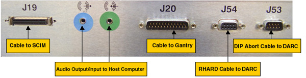

Cables to be removed: (Refer to Illustration 3 below for cable connections)
J19: Cable to SCIM/Keyboard
Audio output/input cable to Host Computer, connect as per the color of the cable adapter
J20: Cable to gantry
J54: Serial RHARD cable to DARC
J53: Serial DIP Abort cable to DARC
Power cord on the rear panel
Illustration 3: Cable Connection on GOC4 Intercom Board Right Side Panel
